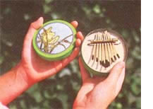
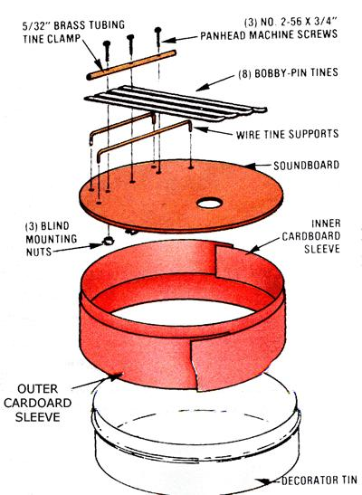

Like many people, I'm attracted to folk music . . . primarily because I like its innate "personal" quality. While folk tunes often do reflect universal human feelings and ideas, they're just as often played on instruments created by the individual performer. A good example of this sort of music maker is the African "thumb piano" (also known as the mbira, zanza, or kalimba) . . . which isn't a piano at all, but can be more accurately classed as a plucked idiophone. Appearing throughout Africa in virtually whatever shape strikes the musician's fancy, the mbira may have tines made of any springy material from metal to rattan, while the whole instrument can range from hand to lap size. With my first exposure to the thumb piano, I found the tune maker fascinating . . . and before long, I came up with a small, easily carried version that I call a pocket harp. Of course, my little instrument is not so much a "harp" as a "plunker", but it is fun to play and it can be tuned to different notes, so the homegrown musician will find it rewarding.
MAKING YOUR OWN
To build a pocket harp like mine, you'll need the following:
Materials:
small decorator tin with a lid (mine was circular and 3" in diameter) piece of 1/ 16" aircraft plywood sized to fit under the lid of the tin (4) 2-7/8" hair-roller bobby pins
(2) 3"lengths of coat-hanger wire section of 5132" (OD) brass tubing, of which approximately 2" will be required
(3) No. 2-56 X 314" pan head machine screws and matching blind mounting nuts
(2) strips of box or shirt cardboard, as wide as the tin is deep, and a bit longer than the inside circumference of the tin
Tools: A band saw or coping saw, wire cutters, an electric drill with assorted bits, a drill press and a 3132" bit, scissors, pliers, a ruler, a compass (optional), a metal file, sandpaper, electrical (or similar) tape, and several pieces of wood on which to drill.
Decorator tins come in different shapes and styles. Some have straight sides, while others have a rolled lip around the inside of the rim. The pocket harp's soundboard needs to fit snug inside the tin, and if your tin has a lip, you'll have to cut the soundboard a little smaller in order to get past that ridge. A cardboard "sleeve" will then have to be fitted between the sides of the tin and the soundboard to insure a tight fit. This large inner sleeve will be as wide as the tin is deep, and will be slightly longer than the container's inside circumference. Inside this sleeve is another, narrower cardboard sleeve upon which the soundboard will rest (see the diagram).
If your tin doesn't have a Tip, you'll need only the second sleeve.This strip is about half as wide as the distance from the tag t the bottom of the interior. Since the sound board must snuggle down far enough inside the tin to allow the lid to close over the tine and the clamp, I sometimes cut the strip for the small sleeve with the midsection wide than the ends. (This brings the free ends the tines up for easier playing access.)
To begin making the soundboard, track the outline of the tin directly onto the air craft plywood. Cut out the shape with band or coping saw, and use sandpaper working very slowly-to insure that the piece fits snug inside the tin. The plywood will be the kalimba's soundboard . . . an some sort of shape-a circle, star, or other design-must be drawn, drilled, then cu out of its center or far edge to serve as sound hole. Once the top is shaped and the sound hole is made, set the piece asid while you work on the other elements.
THE TINE ASSEMBLY
The harp tines-sections from long bobb pins-rest on top of two wire supports. These are all clamped in place by a section of brass tubing that is bolted on top of the whole assembly (see the diagram). The wire supports are simply two 3" lengths of coat hanger wire, each bent (with pliers) into right-angled 2"bracket or "staple" wit a 1/2" legs.
These legs drop through small holes in the soundboard, allowing the 2" portion to lie flat against the top. The sup
ports should be parallel and about 5/6 inch apart, so after you've bent the legs, mark the points where the holes should be on the soundboard and then drill them (a 3/32" bit should do the job).
The harp tines will vary in number depending on the size of your instrument. I used 8 in my 3" circular tin kalimba, and cut them from 2-7/8" bobby pins, the largest tine measuring half of one pin. Each succeeding tine is 1/8 inch shorter than the one before. I always make sure that the free ends of the tines turn up, bending them with pliers if necessary. When using a circular tin, I position the tines with the longest in the center and the shortest ones on the ends (this is the most common arrangement in mbiras). On a rectangular model, however, I lay them out from longest to shortest, left to right.
A clamp made from thin brass tubing holds the tines in place. To be sure that everything lines up correctly, you should use a drill press with a 3/32" bit to make the holes in the tubing and the soundboard. First, score a deep groove in a piece of scrap wood to hold the length of brass. Next, tape the tube in place at both ends so it won't twirl in the groove. Mark three holes on the tubing, keeping them 314 inch apart . . .
dent the marks lightly with a nail set or a nail . . . then drill the holes with the 3/32" bit. Cut the tubing off at a point 114 inch from each of the two end holes, making a 2" piece. Any rough or sharp edges on the
tines or brass tubing should now be smoothed with a metal file.
To position the clamp's holes on the soundboard, first drop the wire supports in place . . . center the drilled brass tube between the supports . . . and stick a pencil through the holes to mark the plywood.
Then simply drill where indicated. These bores, by the way, will have to be a shade larger than those in the tubing because the blind mounting nuts are larder than the screws. (It's easy to enlarge the holes a bit by gently inserting and twirling the end of a nail, awl, or Phillips screwdriver.) With the wire supports in place, lay the brass tube between them, insert the machine screws through both the tubing and the soundboard, and loosely attach the blind nuts. Next, push the tines between the supports and the tube and tighten the
screws just enough to hold them in place.
At this point, fiddle around with the tines, sliding them in and out, trying one length and another until you're satisfied with their arrangement. When that's done, tighten the assembly until the tines are held firmly. To rechange their pitch, simply loosen the screws just enough to be able to slide the tines in or out. (The shorter their length, the higher their sound.) With the soundboard completed and the cardboard sleeves) in place, you can fit the soundboard inside the tin. It may be difficult to get it past the wider sleeve: A piece of thin plastic-such as that from a sand-with bag-laid between the wood and the sleeve will help to "shoehorn" the plywood inside. (Pull the plastic out afterward.)The pocket harp's easy portability, cheerful twang, and pleasant tone make it a good . . . one that lovers of home-grown music will enjoy a great deal.
|
 |
 |
|